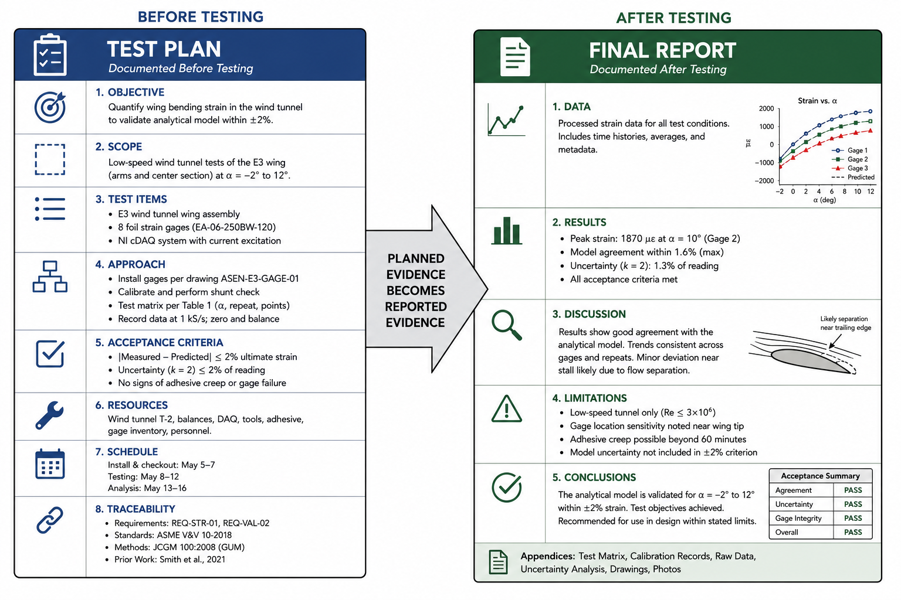
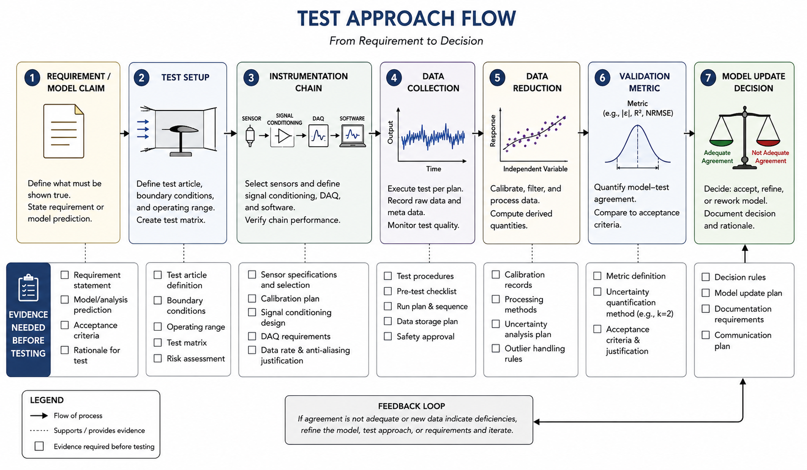

How to Write a Test Plan
The document that decides what evidence will count before evidence exists
A test plan is what keeps an experiment from becoming a well-instrumented improvisation.
In engineering practice, a test plan is written before the test happens. That timing is the point. A final report explains what was done and what was found. A test plan explains what will be done, why it will be done, what evidence will count, what resources are required, and how the results will connect to a requirement, model, or decision. In E3, the full deliverable is a V&V plan. Professional test planning is the broader document family it belongs to. Learning the structure helps you write a V&V plan that feels like engineering work instead of a long explanation after the fact.

Why this image is here: It shows that a final report is not invented after the fact; it is the planned evidence trail made visible after testing is complete.
A strong test plan begins with an objective. The objective should be more specific than "test the system." It should identify the model, requirement, or design decision the test supports. For E3, an objective might be: "Measure the thrust response of a small propeller-motor system across voltage settings to determine whether the predictive model estimates thrust within the accuracy required for preliminary power-system sizing." That sentence names the response, model, and intended use. It also hints at the validation criterion.
Next comes scope. Scope defines what the test includes and what it deliberately excludes. This is not bureaucratic filler. Scope protects the interpretation of results. If your paper design measures steady-state behavior but not transient response, say that. If your proposed test applies only to a narrow range of Reynolds numbers, specimen geometries, or load levels, say that too. A clear scope statement prevents a reader from treating limited evidence as universal proof.
The plan should identify test items and test approach. Test items are the physical objects, specimens, models, or configurations under evaluation. The test approach describes the setup, variables, instrumentation, data collection sequence, and reduction method. For E3, this is where your earlier design work appears: independent variables, dependent variables, controlled variables, confounding factors, replication, randomization or blocking, sensors, DAQ settings, filtering, and calibration activities.

Why this image is here: It ties the reporting structure back to the execution chain so you can see where traceability has to be established before the test ever begins.
The plan also needs criteria. Some test plans use pass/fail criteria tied to requirements. A V&V plan may instead use acceptable agreement criteria tied to intended use. Either way, the criterion must be written before data collection. If the acceptable error is plus or minus 5 percent, say why that level matters. If the validation metric is confidence interval overlap, residual trend, RMSE, or percent difference, name it before the result exists.
Resource planning belongs in the document too. Engineers need to know what equipment, people, time, calibration records, software, and safety approvals are required. This may feel less exciting than uncertainty propagation, but it is where many tests fail. A beautiful validation metric is useless if the sensor cannot be acquired, the calibration cannot be checked, or the test sequence cannot fit in the available time.
Finally, a test plan should include traceability. Traceability means every major test activity connects back to a requirement, model claim, response feature, or validation objective. If a measurement does not trace to the objective, ask why it is being collected. If a model claim has no measurement tied to it, ask how it will be evaluated. Traceability keeps the plan from turning into data collection for its own sake.
The Takeaway: A test plan is a prospective argument about evidence. It defines the objective, scope, approach, criteria, resources, and traceability before the test begins, which is exactly the habit your E3 V&V plan is meant to build.